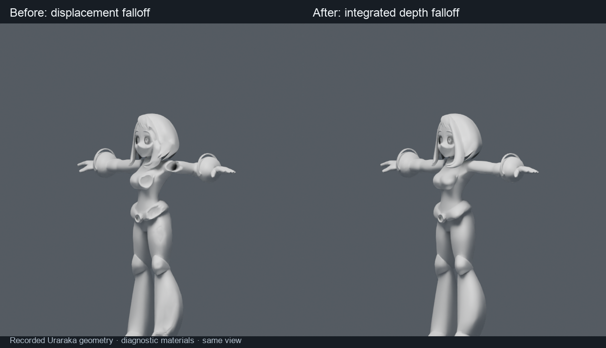
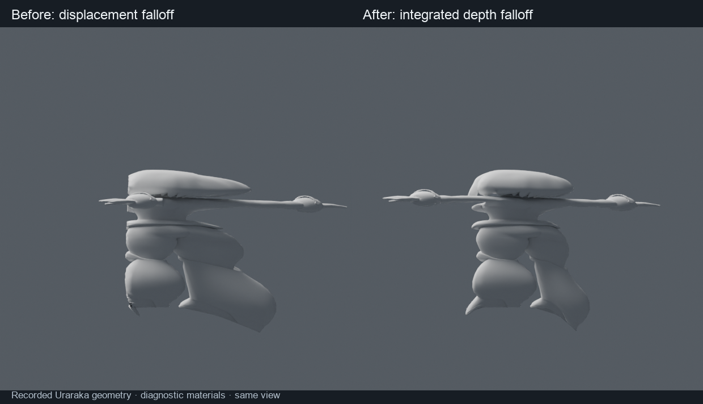

← OverviewInstalled in Uraraka · dirty scene not saved
Falloff without reversing depth order
The old falloff scaled the entire depth offset. Near short-lens transitions, neighboring surfaces could reverse order and fold through one another. The repair integrates depth stretching instead, retaining the accepted full-strength effect and lateral falloff.
Recorded Uraraka comparison
Same geometry, view and linear falloff. Diagnostic gray CPU renders make the old shoulder/chest holes visible. These are not production MToon captures.

Side view

Lens ratio 0.189302; fixed orthographic inspection views. Exact mode still permits camera-plane clipping. Existing source intersections and arbitrary radial masks are not a general collision-solving guarantee.
Retained realtime evaluation
| 68,185 vertices / seven meshes | Median | p95 |
|---|
| Before | 1.72–1.82 ms | 2.03–2.19 ms |
| Repaired | 1.98–2.05 ms | 2.23–2.36 ms |
Forty warm updates per block, old/new/new/old order. Geometry evaluation only; not live viewport FPS. The correction costs roughly a quarter millisecond in this fixture. Constant falloff bypasses the extra calculation. Custom tables update only when their source curve changes.
Compatibility and preservation
77 lens/profile cases pass on actual Blender 4.0.2, 4.2.23, 4.3.2, 4.4.3, 4.5.15, 5.0.1, 5.1.2 and 5.2.2. Saved animation paths, user curves, transformed companions and animated shadow capture are covered. Internal geometry schema 19 migrates existing groups; no release version bump.
Live Uraraka retains its focal length, falloff choices, source, frame and selection. All seven meshes remain finite with complete shadow-source arrays; the native renderer is active without a reported error. The original dirty scene remains unsaved.
No renderer shader, native certificate or Windows backend policy changed. Physical Vulkan/OpenGL checks remain separate. Partial falloff does not promise invariant volume, curvature or raycast results.
Report · Recorded geometry and timings · Runtime checks · Live installation · Depth-order cases